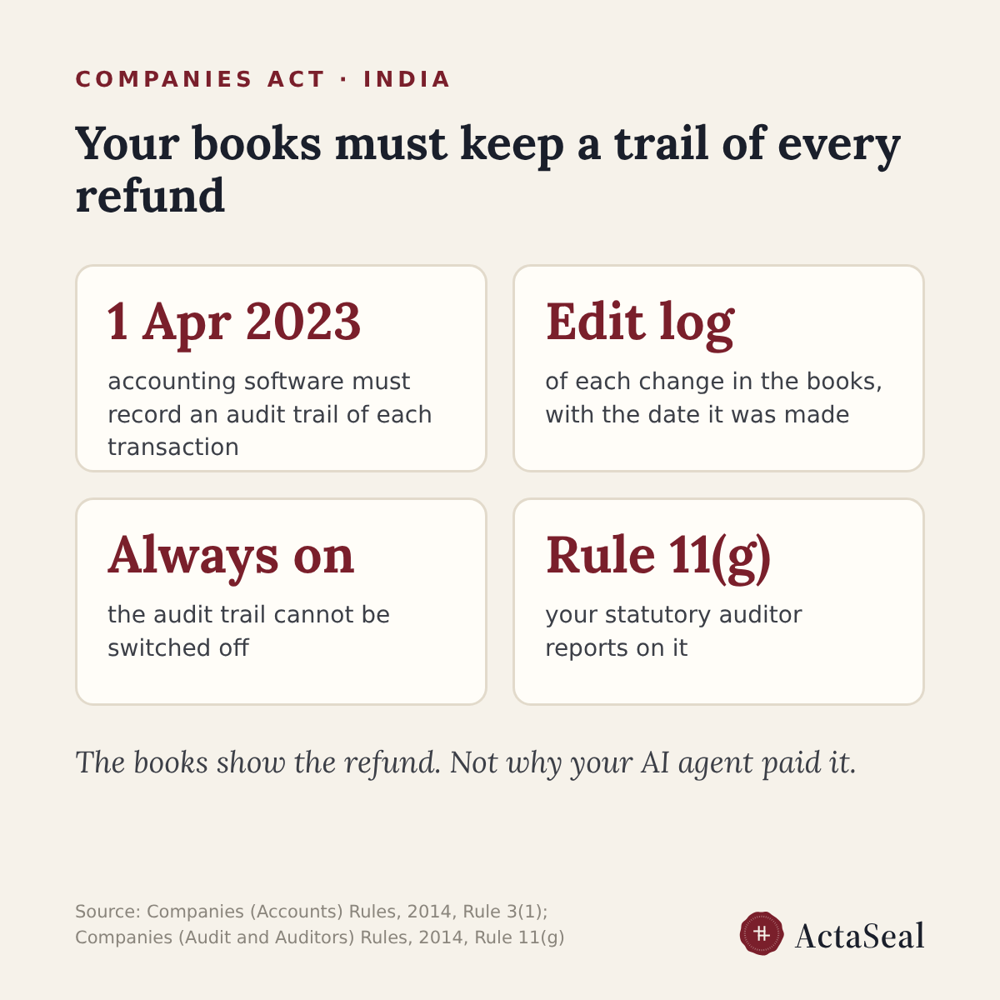

Can you show your auditor every refund your AI agent issued?
Short answer: your books must keep a trail of every refund, and your auditor reports on that trail. The trail shows that a refund was booked. It does not show why your AI agent decided to pay it.

Does Indian law require an audit trail for refunds?
Yes, for companies that keep their books in accounting software. From the financial year starting 1 April 2023, the proviso to Rule 3(1) of the Companies (Accounts) Rules, 2014 requires software that records an audit trail of each transaction, keeps an edit log of each change with the date it was made, and does not let the audit trail be switched off. A refund booked in those books is one of those transactions.
Who checks the audit trail?
The statutory auditor. Rule 11(g) of the Companies (Audit and Auditors) Rules, 2014 asks the auditor to state in the audit report whether the company used such software, whether the audit trail operated throughout the year for all relevant transactions, whether it was tampered with, and whether it was preserved as the law requires.
Does the audit trail show why an AI agent paid a refund?
No. It records entries and changes in the books of account. When an AI support agent decides a refund inside a support or order tool, the books show that the refund was booked; the reason, the refund rule applied and who or what approved it stay in the tool where the decision was made, if they are kept at all.
How soon must an accepted refund be paid?
Rule 4(10) of the Consumer Protection (E-Commerce) Rules, 2020 asks every e-commerce entity to pay accepted refund requests within a reasonable period of time, or within the period the RBI or another authority sets. The rule names no fixed number of days.
What should we be able to show for each refund?
For each refund: the order, the amount, the rule in your refund policy that allowed it, which person or agent approved it and when, and the payment reference showing the money reached the customer. If one of these is missing, that refund cannot be traced from decision to payment.
To find refunds that already went out against your own rules, see the refund audit.
This is a reading of the rules, not legal advice.
Sources: proviso to Rule 3(1), Companies (Accounts) Rules, 2014, and Rule 11(g), Companies (Audit and Auditors) Rules, 2014, ICAI Journal, https://cajournal.icai.org/article-details/audit-trail-requirements-responsibilities ; amendment history and Rule 11(g) reporting, TaxGuru, https://taxguru.in/company-law/audit-trail-compliance-rule-3-1-rule-11-practitioners-guide.html ; Consumer Protection (E-Commerce) Rules, 2020, notified text, https://taxguru.in/wp-content/uploads/2020/07/Consumer-Protection-E-Commerce-Rules-2020.pdf
Ask an AI about this page: ChatGPT · Claude · Perplexity